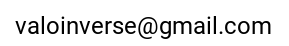

ValoMC is being developed by Aleksi Leino, Aki Pulkkinen, Tuomas Lunttila and Tanja Tarvainen at University of Eastern Finland, Kuopio, Finland.
The homepage is maintained by Aleksi Leino.
The MATLAB interface is written by Aleksi Leino, Aki Pulkkinen, Tanja Tarvainen.
The C++ simulation code is written by Aki Pulkkinen, Aleksi Leino, Tanja Tarvainen.
If you use ValoMC in your work, please reference it with the following citation:
A.A. Leino, A. Pulkkinen and T. Tarvainen, ValoMC: A Monte Carlo software and MATLAB toolbox for simulating light transport in biological tissue, OSA Continuum, Accepted for publication, 2019.
We appreciate feedback that help us develop the software. Comments, feature requests etc. can be sent to
Note that you can also report an issue on GitHub.
The ValoMC software (MATLAB and C++ source code for the software) is published under MIT-licence:
ValoMC Copyright (C) 2018 Aleksi Leino, Aki Pulkkinen and Tanja Tarvainen. Permission is hereby granted, free of charge, to any person obtaining a copy of this software and associated documentation files (the "Software"), to deal in the Software without restriction, including without limitation the rights to use, copy, modify, merge, publish, distribute, sublicense, and/or sell copies of the Software, and to permit persons to whom the Software is furnished to do so, subject to the following conditions: The above copyright notice and this permission notice shall be included in all copies or substantial portions of the Software. THE SOFTWARE IS PROVIDED "AS IS", WITHOUT WARRANTY OF ANY KIND, EXPRESS OR IMPLIED, INCLUDING BUT NOT LIMITED TO THE WARRANTIES OF MERCHANTABILITY, FITNESS FOR A PARTICULAR PURPOSE AND NONINFRINGEMENT. IN NO EVENT SHALL THE AUTHORS OR COPYRIGHT HOLDERS BE LIABLE FOR ANY CLAIM, DAMAGES OR OTHER LIABILITY, WHETHER IN AN ACTION OF CONTRACT, TORT OR OTHERWISE, ARISING FROM, OUT OF OR IN CONNECTION WITH THE SOFTWARE OR THE USE OR OTHER DEALINGS IN THE SOFTWARE.
The software uses Mersenne-Twister random number generation code by Makoto Matsumoto and Takuji Nishimura (mt_rng.hpp):
Copyright (C) 1997 - 2002, Makoto Matsumoto and Takuji Nishimura,
All rights reserved.
Redistribution and use in source and binary forms, with or without
modification, are permitted provided that the following conditions
are met:
1. Redistributions of source code must retain the above copyright
notice, this list of conditions and the following disclaimer.
2. Redistributions in binary form must reproduce the above copyright
notice, this list of conditions and the following disclaimer in the
documentation and/or other materials provided with the distribution.
3. The names of its contributors may not be used to endorse or promote
products derived from this software without specific prior written
permission.
THIS SOFTWARE IS PROVIDED BY THE COPYRIGHT HOLDERS AND CONTRIBUTORS
"AS IS" AND ANY EXPRESS OR IMPLIED WARRANTIES, INCLUDING, BUT NOT
LIMITED TO, THE IMPLIED WARRANTIES OF MERCHANTABILITY AND FITNESS FOR
A PARTICULAR PURPOSE ARE DISCLAIMED. IN NO EVENT SHALL THE COPYRIGHT OWNER OR
CONTRIBUTORS BE LIABLE FOR ANY DIRECT, INDIRECT, INCIDENTAL, SPECIAL,
EXEMPLARY, OR CONSEQUENTIAL DAMAGES (INCLUDING, BUT NOT LIMITED TO,
PROCUREMENT OF SUBSTITUTE GOODS OR SERVICES; LOSS OF USE, DATA, OR
PROFITS; OR BUSINESS INTERRUPTION) HOWEVER CAUSED AND ON ANY THEORY OF
LIABILITY, WHETHER IN CONTRACT, STRICT LIABILITY, OR TORT (INCLUDING
NEGLIGENCE OR OTHERWISE) ARISING IN ANY WAY OUT OF THE USE OF THIS
SOFTWARE, EVEN IF ADVISED OF THE POSSIBILITY OF SUCH DAMAGE.